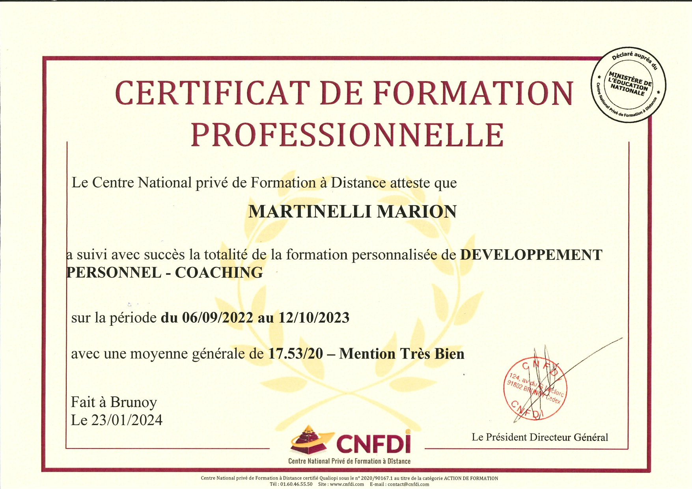
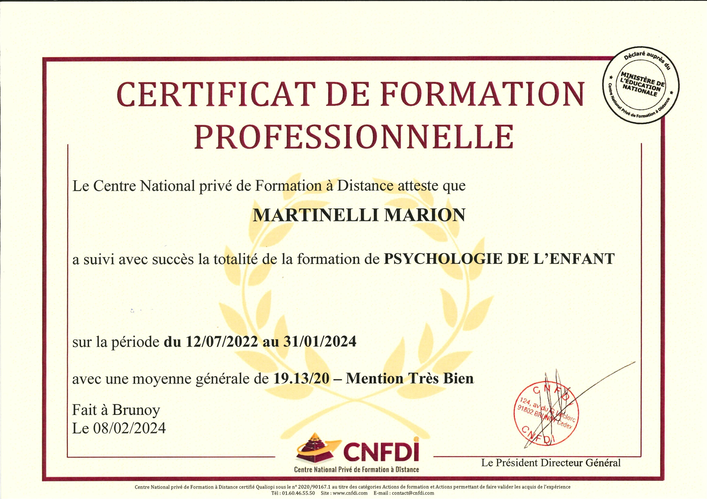
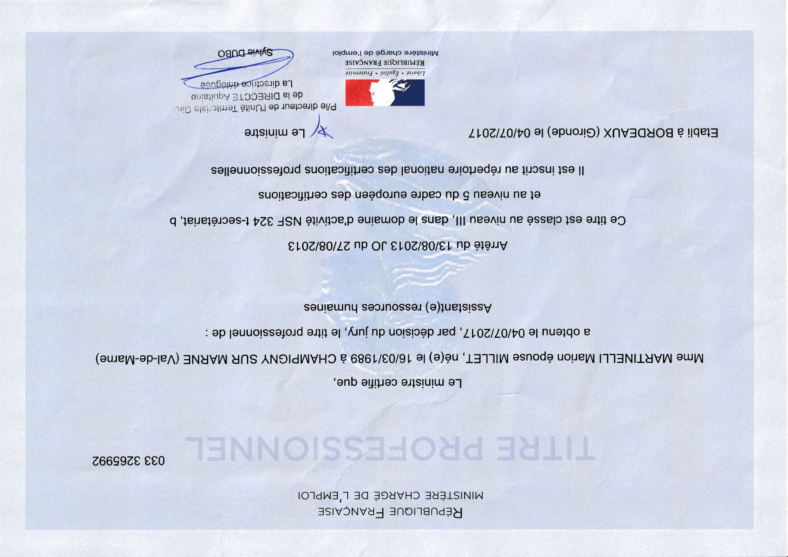
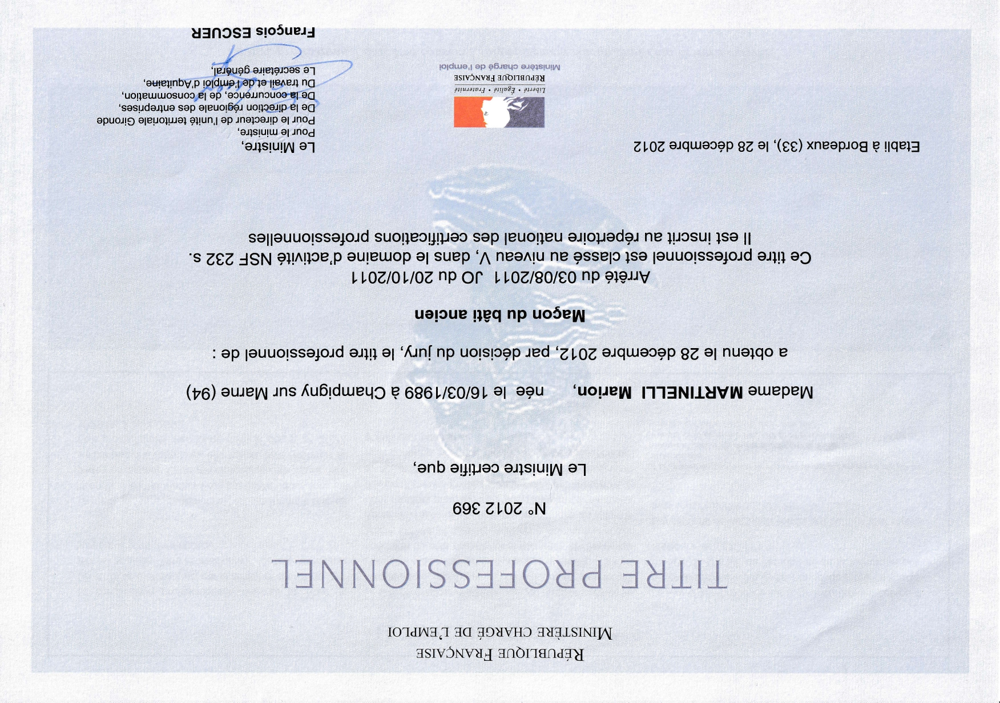
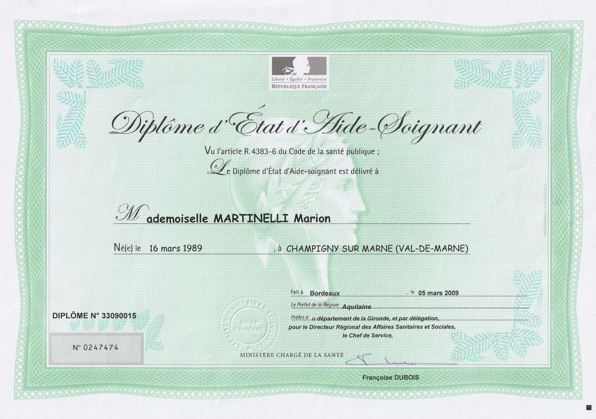
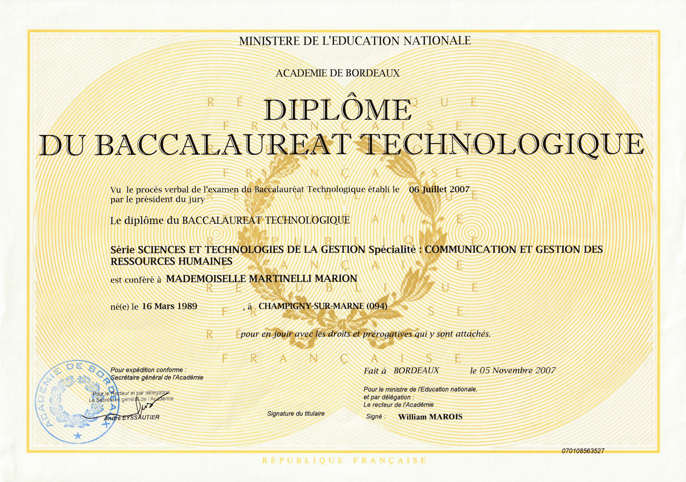

Aller au contenu principal
Mon cursus et mes diplômes
Timeline de mon parcours académique
Titre Professionnel Développeur Web et Web Mobile

Certificat Professionnel de Coach en Développement Personnel

Certificat Professionnel de Spécialité en Psychologie de l'enfant

Titre Professionnel Assistante RH

Titre Professionnel de Maçon du Bâti Ancien

Diplôme d'État d'Aide-Soignante

Baccalauréat STG Option Gestion des Ressources Humaines
